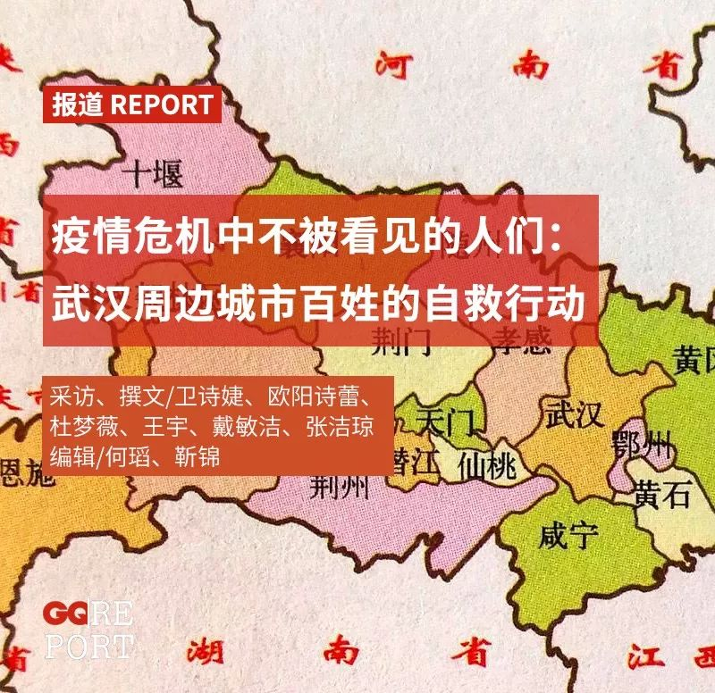
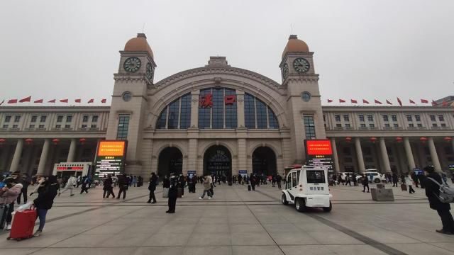
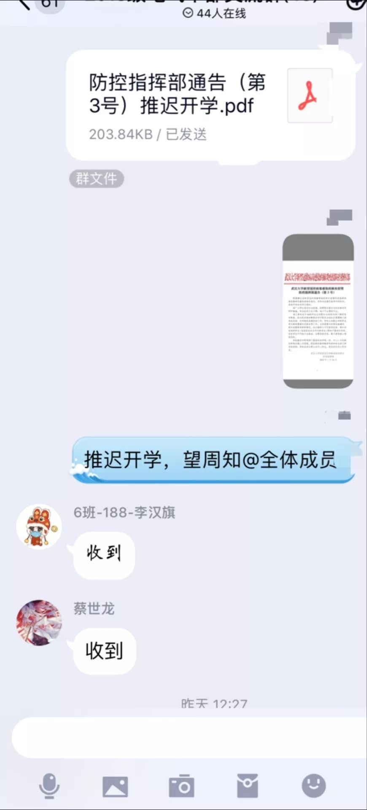
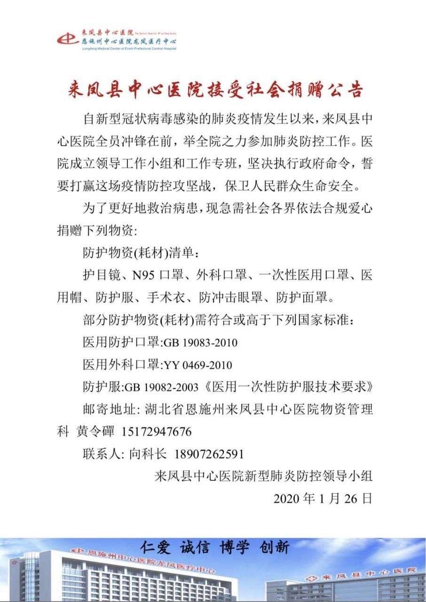
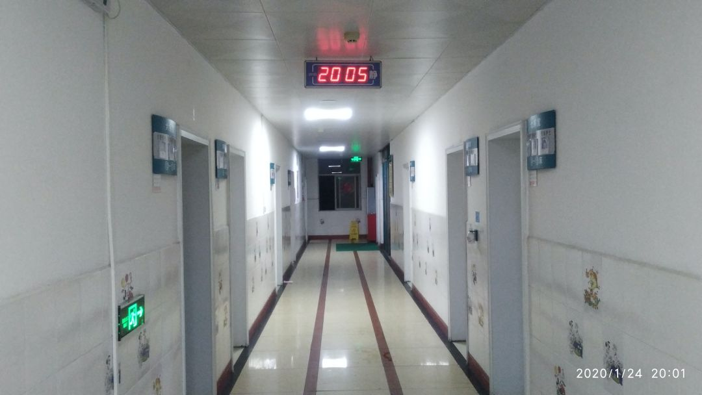

孝感前线医生：武汉更难，我们下面不好意思提要求
原文链接 备份链接 武安医生（化名）所在的医院是孝感市三家抗疫医院之一。距离武汉66公里的孝感是距离武汉最近的地级市，截止到1月28日上午，有确诊病例173例。与暴风眼武汉一样，以孝感为代表的武汉周边小城也正在经历着决战时刻。 坐诊之 …

新型冠状病毒疫情像是一场突如其来的阴霾，在这个冬天笼罩了华中大地。相较于最受关注的武汉市民，周边城市的人们，像是处在阴霾边缘，遭受侵袭，却又不常被看见。面对重重困难，孝感、黄冈、黄石、信阳、荆州、天门……各个城市的百姓们，开始了一场驱散阴霾的自救行动。
···············
❶
***“需要支援******“***
离家出门时，父母已经睡下了，心虚的李芳在关上门前对父母喊了一声：爸、妈，我回医院了。父母惊醒，问她：是所有人都回医院还是你一个人回？她答：很多人都被紧急召回了，我走了啊。没等父母回复，她关上房门走了。
李芳撒谎了，那天是腊月二十九。晚上23:27，荆州中心医院的护士李芳接到护士长的微信通知：疫情严重，是否愿意回医院值班支援？她立刻回复：好的，今晚就回。几分钟后她发了一条朋友圈，询问是否有朋友从洪湖前往荆州，可否顺路捎她一段。事实上，整个科室的护士都已经返乡，只有她一个人答应回院。
洪湖市距离荆州200公里，大约两小时车程。朋友圈无人回复，李芳找了弟弟帮忙。许广高速上，弟弟驾着车，一路上反复追问李芳：“根本不是医院强制召集吧？是不是你自己要求回去的？”
李芳没有正面回答。弟弟板着脸，一路沉默。那个晚上，李芳的父母一夜没睡。

湖北地图
“谁不想在家过个好年。“五天后，李芳在电话里哽咽着说。因为接触过病人，她不能回家，内心对父母充满了歉疚。事实上，从出门的那一刻她就意识到，这个春节绝不会如常了。
大年三十早上7:50分，李芳抵达医院的肿瘤病区。病房还没有彻底腾空，医护人员们穿梭在病房和楼层间，脚步匆忙。没有人对接李芳。医生们只穿着一件手术衣，没有防护服。值班的护士忙着打电话联系民间物资。病房里只剩一副口罩、一副护目镜和一套防护服。医生们把这些装备让给了需要和病人密切接触的李芳。
他们提醒她，穿着要小心，下班时还要把防护服脱给下一班值班的护士。
武汉封城后，包括荆州、孝感、黄冈等16座湖北省内城市相继“被封”。物资集中在武汉，周边县市不仅无法获得即刻支援，更因高速拦截使得民间物资亦无法及时抵达。
医院的工作群里气氛紧张。医生不停@医院管理层，“物资紧缺！需要支援！”但没有收到答复。
李芳的情绪开始激动起来，眼泪唰唰地流。落泪有几层原因，一方面是害怕感染，内心焦急；另一方面，父母猜到了她是自愿回院，打电话令她回家。手机不停地振动，李芳不敢接。
下午3点至晚上11点，李芳要独自负责五层楼的病人。夜班一共两名护士，另一名护士在护士站接电话调配物资，她没有防护服，见李芳忙不过来，也帮忙去病床铺了被子。李芳需要什么用品，就距离五米开外大声地喊，物品从护士站丢过去，两人全程避免接触。
一个人坐电梯往返于五层楼之间，病人难免等得急。一个上了年纪的奶奶冲她吼，李芳的也大声地喊回去：真的不好意思！我没有在玩，你稍微等一下，我马上就来了！
护目镜起雾，手套又厚，李芳对血管的判断不准了。头两个病人被她扎破了血管。有些病人来时已经几天没吃东西，血管都瘪了，更难扎针。
李芳不停道歉。“我真的看不见。“大家都表示理解。
一对年轻夫妻，坚持递些水果给她，她再三拒绝后，对方请求：那就喝口水吧！李芳还是拒绝。她不敢吃喝，一旦要去厕所，防护服必须脱下来，有感染的风险。“但那一瞬间很感动，我忘记了所有委屈和恐慌。”
九个小时后，李芳脱下医护装备。耳朵生疼，印着很多勒痕。荆州的出租屋内，李芳不停地在手机上联系民间物资，密切地关注着同事们的储备。她拆下了之前为了漂亮接上的长发，头发上都是没掉的胶水，粘成一坨。
新型冠状病毒像是一场突如其来的阴霾，在这个冬天笼罩了华中大地。相较于最受关注的武汉市民，周边城市的人们，像是处在阴霾边缘，遭受侵袭，却又不被看见，李芳就是其中之一。孝感、黄冈、黄石、河南信阳等各城市的人们，都在期待着阴霾的散去。

大年初一，对电梯间进行消毒的信阳市民
❷
***“谁都难以相信那会是灾祸******”***
河南省最南部的地级市信阳与武汉相邻，仅距离200公里。根据地方政府在24号发布的文件：截止到1月24日，武汉返乡人员全县共计1005人。这不是个小数字。但截止到1月21日，信阳人郑晨从北京返乡时，途径信阳东高铁站、信阳汽车站和息县汽车站，一路上没有看到任何检查或标语。在县城街上，“刚出门就碰到了三辆鄂A开头的车”。
回家的前一天，郑晨在北京公司和住所附近的药房已经买不到口罩了。她打电话给母亲，让她去买口罩和消毒液，母亲笑着说，哪有那么夸张？最后只好用她用下命令的口气：你需要去给我买口罩，我回北京也要用到。只有这样说，才能说服母亲买回口罩保护一家人。
郑晨回家之后，发现母亲买的两袋口罩不带有yy，gb 标识，她问了朋友，发现除医院有亲人的朋友外，大家都没有正规口罩，有人还戴着波点花纹的口罩去超市购物。有市民跑遍全县药房都找不到带有“医用外科”或者“N95”字样的口罩，只能用一次性口罩替代。
因为河南省内多地积极落实防疫政策，甚至出现“封村”行为，网络上很多人在说河南硬核，“大家都来抄河南的作业”，郑晨却觉得纳闷：信阳没有拉横幅，没有落实到社区和乡村，也没听到大喇叭宣传防疫。人们照常逛街，通往商场的路拥堵为患。到了24号晚上，信阳才通知排查、设卡，25日白天才开始施行。

1月28日，空荡荡的信阳天润广场，平日里是信阳最繁华的商业区
疫情能够将人们阻隔在家，却不能阻隔生活的热情。吕永洁的父母平日里在北京工作，有每天在公园跳舞的习惯。疫情发生后，夫妻二人各自换上衬衫、长裙，把沙发和茶几挪到一边，收拾出一片8平米的空地，关紧窗子避免噪音外露，拉上银色带闪片的窗帘，开着最亮的吊灯，配上音响，在家里跳交谊舞。他们让女儿用手机录下跳舞视频，要把这个视频发到北京跳舞的交流群里。
吕永洁父母在家跳舞的视频
更多人无法享受团聚。信阳宣布封城的那天，李染得知身在武汉的妻子发烧了。武汉于23日封城，已经来不及接出妻子，当天，李染回了老家天门市。他不得不回忆起，12月下旬，他和妻子曾带高烧的女儿在武汉市中心医院输液一周。第七天离开医院时，他听说那里确诊了一例“不明原因肺炎”——那会是病毒肺炎吗？他选择安慰自己：去几次医院就感染？运气不会那么差。

大年初三，空荡荡的天门市陆羽广场
妻子不敢贸然去医院，独自哭了很多次。她跟李染视频连线，谈起《鼠疫》里的情节，一开始只是死了几只老鼠，没有人在意，直到门房老头死去。
看到那里，仍在发烧的妻子觉得悲伤压抑。李染则想起书中的一句话：“天灾人祸本是常见之事，然而当灾祸落在大家头上时，谁都难以相信那会是灾祸。”
江门市的主街道空空荡荡。大年初三，李染想为支气管肺炎的4岁女儿买些止咳药，没有一家药店开门。天门看起来像一座死城。好消息是，妻子退烧了。
妻子在电话里告诉他，微信群里有人要求湖北人不要出来害人。一向开朗的李染变得异常愤怒：“难道这些开‘地图炮’的人还能限制我们自由行动的权利？”
可人们的恐惧是真实的。回到天门那天，父母退休前的原单位对从武汉返乡的他做了登记。就连表弟也对他开玩笑：“你太危险了。”没有人要求他隔离，但与外人碰面时，他会自觉地戴好口罩，以免让别人感到异样。
困在家里，李染发现自己远离了“日常生活的摧残”，竟然重新拾起了一点诗意。他开始抄诗，教女儿背诗。“黄鹤楼中吹玉笛，江城五月落梅花。”在他的人生里，文学从未显示过这样的份量。

困在家中，李染决定抄诗，抄完就教女儿背诵
他愿意用加缪的话来总结这一切：“我并不期待人生可以过得很顺利，但我希望碰到人生难关的时候，自己可以是它的对手。”
❸
***无法置身事外***
等到察觉到阴霾已经来临的时候，很多人开始意识到，自己已经无法置身事外。
“这几天看到太多网络求救，我都不知道该先救自己还是先救别人。”身在兰州的李玉接到了父母的电话，84岁的爷爷一直在洪湖市人民医院的ICU病房，1月27日下午，医院下达了病危通知。李玉在微博上写道：“相比武汉很多得不到治疗的人来说，我爷爷能够隔离已经是幸运。“
可她同时也感到无力。截至1月28日，老家洪湖市只有3个ICU床位，没有一台心肺体外循环仪（ECMO），也没有会操作这个设备的医护人员，这是重症病人的救命装置。更令李玉感到担忧的是，整个洪湖市没有冠状病毒试剂盒，疑似病人无法确诊。
洪湖市的新型冠状病毒防控宣传车
在湖北省的疫情实时动态中，截至发稿时，洪湖市共确诊8例——几天前确诊数还是0。等待确诊的时间里，大批发热的疑似病人聚集在医院，一名高度疑似病人已于27日晚上逝世。物资告急的情况下，很多医生几乎零隔离地接触病人。
在这个冬天，冷风吹进了许多人的心里。身在黄冈市的孟梅在第二人民医院的门口等待转移车辆。她的父亲在确诊后被防疫指挥部通知，需要转移至新建立的传染病医院救治。大年初一，从晚上八点半到次日凌晨0点27分，她等了四个小时才坐上转移车。
临行前，她询问医务人员：父亲尚未脱离危险期，生活不能自理，在新医院能否得到顺利救治？
对方安抚她，“都安排妥当了。就是病患不能自理需要家属陪护。”
她又问，家属陪护如何能避免交叉感染呢？中心医院答，一切都有安排。
下车后，眼前的场景令她紧张：医院设施简陋，满地乱丢的垃圾，灰尘、废纸、带血的胶带，以及随处堆积的医疗用品。没有电梯，她与医护人员合力把父亲的担架抬到三楼病房。周围病床的老人歪歪地躺在床上，没有戴口罩。
善良的小护士用奇怪的语气问她，“只戴口罩不怕传染吗？”又看了一眼在病床上正被吸氧鼻饲的老父亲，“怎么被转移到这里了？”
孟梅这才明白，这里并不具备治疗这类病危病人的医疗条件。

1月23日，武汉汉口火车站，工作人员正在捆绑栅栏。
（红星新闻首席记者 王效 摄）
同样感受到困惑、焦躁、疲惫的，还有孝感市大悟县26岁的李娟。起初，孝感市没公布确诊和感染病例的数据，李娟感觉“很惶恐”，在家里不断拿手机刷新闻。公布后，孝感市的数据又没武汉数据更新得快，更不提孝感市下的大悟县了——她仍然感到不安。
电视机上县城电视台字幕滚动播放疫情信息，楼下街道上，循环广播疫情信息的车一会儿就驶过一次。长时间在手机上刷新闻带来了疲惫，再多的讨论都显得无效。她索性放下手机，暂时不管了。
❹
***环武汉告急***
武汉周边的黄冈市蕲春县是省内医疗物资最为欠缺的地区之一，也是一个国家级贫困县。与此同时，该县的武汉流入人口极大。黄冈市于1月23日起封城，蕲春县也随之封锁。次日，县医院就发布了接受社会爱心捐赠的公告。
全县15个乡镇的卫生院里，疑似病人相继出现。医生穿着一次性雨衣，戴着摩托车头盔给病人做检查。GQ报道致电县医院公共卫生科的袁科长，询问该院是否欠缺物资，对方表示不便接受采访，但如果有物资捐赠，“我们是需要的。”
黄冈市民张彦文在北京一家公司当产品经理，单位目前还没通知他多久返工。他不知道武汉封城得到什么时候。武汉向来是周边城市的交通枢纽，只要武汉封城，他就很难去省外其他城市。无论是做火车还是乘飞机，他都要从武汉出发。但如果单位要求返工怎么办？他想了想：“我如果要走，可能会想办法坐车去邻省，再想办法回北京。”

1月23日，9时39分的汉口火车站，人头攒动。大量原本今日踏上回乡旅途的旅客手持行李和包裹，聚集在广场上。（来源：澎湃新闻）
阴霾笼罩之下，一些不愿意被其控制命运的人们，开始尝试自救。
1月20日晚九点，钟南山接受央视采访，肯定了新型冠状病毒存在人传人的特性，事后证明这是此次疫情防控的转折点，以武汉为中心向外扩散，周边城镇的大小医院迎来了大批人流。
第二天，湖北省荆门市某县城人民医院人流激增，放射科技师张晓艾从业两年，几乎没有遇到过积攒病人的情况，但那一天，“我们这样的小医院，下班之后还有50个病人没有做CT。”
当试剂盒尚未到位、确诊流程繁复，血常规和肺部CT扫描成为了筛查疑似病例的首要环节，疫情中异常紧张的人们，通过这两项检查才能消除心中疑虑。
于是从那天开始，放射科做肺部CT扫描的人流最多时达到了平日的两到三倍，“从武汉回来的人，有轻微咳嗽症状的人，之前被确诊为普通流感的人，甚至毫无症状只是忧心忡忡的人，保险起见，都会过来做个CT。”为避免交叉感染，医院把仅有的两台CT机分出一台给到发热门诊。
除夕一大早，回到孝感老家的张晓艾打开科室微信群，看到同事从前一天早上八点一直忙到了凌晨四点，做了400多个CT扫描，科室缺人倒班，她决定放弃假期，提前回去。

医生们采用临时措施应对物资紧缺
此时孝感封城的消息沸沸扬扬，火车和大巴都已停运，张晓艾只得求助父亲开车送她回医院。“如果你不是这个职业，我不会去送你的”，两个多小时的车程，父亲只说了这一句话。
初三这天，张晓艾接到一个病患，一位微胖的中年男人，穿着防护服，戴着N95口罩，口罩外面还套着普通口罩，另外鞋套、手套全方面保护，几乎达到了医务人员的防护标准。
他先去做了检查，结果是没有任何症状，不发烧也不咳嗽，但他坚持要做个CT。“按照我们的要求，不发热的得去住院部做，但他穿成那样子之后，住院部的人都不敢给他做了，让他来我们发热门诊做，就怕出现感染。”
还有一些人，在积极自救的同时，还努力试图去影响帮助身边的人。面对这场疫情，武汉大学电气与自动化学院辅导员王静最初就保持着一种高度的警惕心。疫情爆发之前，她在微信上和医生朋友聊天，他们告诉她，临近春节他们还要加班，连轴转，医院医疗物资也有点紧张。在朋友的只言片语中，王静感受到了危险。
腊月二十九，王静一家人驾车从武汉回到黄石，态度严肃地召开了一场家庭会议，向父母梳理了疫情来龙去脉，反复强调病毒的潜伏期很长，有14天，潜伏期也会传染，决不可掉以轻心。
隔离在家里的这些天，她的手机不时弹出新的QQ消息，”二班安全！“”十班全员平安！”“三班平安！”…..

王静在学院QQ群里每日询问学生的情况
学生回复的消息之上，是王静每天必发的一条消息：“请各位同学坚持每日一报，尤其是发热状况，一定要及时通报。”
截至28日，王静所负责的370名武大学生中，没有一例异常。
根据大数据显示，武汉封城前，500万人离开了武汉，其中绝大部分流入湖北省内的县市。入汉打工的许多年轻人试图逃脱武汉这座危城，却逐渐意识到自己走入了更深的阴霾之中。
孝感市民左杰原本以为，回到汉川老家的农村便可以在这非常时刻暂获一点安心。但他很快发现，仅有二三十人的村庄情况也并不乐观。回乡途中，他看见人们还是互相串门，路上能看到的车几乎都是武汉牌照。
孝感是距离武汉最近的地级市，其辖区汉川市距离武汉最近，平日有大量人口流入武汉。疫情爆发后，又有大量人口流回汉川，县城药店的口罩已经售罄。形势同样严峻。

左杰所在的村庄
农历鼠年大年初一，左杰与父亲爆发了一场争吵。
孝感农村有一风俗：有老人前一年去世了，次年大年初一上午，所有亲朋好友都将聚集在死者后人家里进行一个仪式，给老人上香，并燃放鞭炮、一起聚餐，以表达对逝者的最后追忆。俗称“兴香”。在当地人眼中，“兴香”比串门拜年和初一上坟更为隆重，一则意味着对逝者的送别与思念，更是对逝者后人的安慰与尊重。
父亲坚持要去给一户人家“兴香”。左杰阻止他，“疫情正严重，不能去人多的地方。”前一晚，他当着父母的面给对方家里去了电话，提出明天不去兴香，对方起初称没事，“大家都戴着口罩。也没有外面回来的人。”
“我就是外面回来的，怕携带病毒。“左杰说。对方这才应允。
父亲仍然坚持要去，母亲也生气地说，兴香的鞭炮放在家里，不吉利。左杰在心里埋怨父母，“愚昧无知”。父亲反倒责怪他，“你太没人情味了。”
农村的人际交往建立在人情上。那一天，有其他家属取消了“兴香”活动，被长辈们一顿教训，称之为“不孝之子”。
“真的很为难。”左杰无力阻止父亲。只能在父亲回家后，用酒精为他里里外外消了毒。
❺
***“病好了就能出去玩吗？”***
还有一些人，为了消除阴霾，经历了更为复杂的状况。
26岁的林涵是恩施来凤县人。眼看武汉周边县城医院陆陆续续发布了求援公告，来凤县中心医院却没有动作。林涵和朋友觉得自己应该为此做些什么。24日晚，两人写了一个文案，他们没有写公告的经验，仔细地写上：来凤县中心医院为此次疫情来凤县的唯一定点医院，仅三栋建筑，全体785名职工需要为来凤县33万人口负责——他们随后在淘宝上花了50块钱做成图片。
凌晨两点左右，他们把图发在了微博一个求助信息汇总的评论里，并打算第二天就去找医院说明清楚情况。
第二天九一早，林涵被医院宣传部的电话吵醒了，医院的宣传部请他和朋友赶紧过去。一路上林涵和朋友的手机不断有电话打进来，有人质疑他，也有人说他和朋友在做诈骗，也有爱心人士打来教育他们。这其中有一个好消息：仙桃那里有一批物资，可以捐助给他们。
到了医院，院方告诉他们，私下用医院名义发表声明，不合规矩。林涵觉得，领导都比较上年纪，可能不知道新媒体传播方式有这么大的影响力。院方宣传科希望林涵和朋友写个声明，说明是民间爱心组织自发行为，不要用医院名义。林涵和朋友照做了，发布声明称不再接受物资捐赠，并发给微博上的大V，请求帮忙澄清。

医院官方公告
惊喜发生在当晚九点，人民日报转发了他们最初的求助信息。林涵将截图发给了院方领导，十分钟后收到回复，院方授权给林涵，可以由他们进行接洽，并给了邮寄地址。第二天上午，院方开车去仙桃，拉回了第一批物资，有2万个口罩和500套防护服——这批物资下午就投入了使用。
回家之后，父母问林涵，为什么要发这样的消息，不要乱搞。“这不是你该管的事情，那是那些当官的人该管的。”林涵说，我们这些平凡的人也可以做一些力所能及的事情。
在采访中，他特意说，来凤县一线医护人员领到的是工业用防护服，他们用塑料文件夹当眼罩，医用手术帽、护目镜、医用防护服依旧紧缺，希望能够得到外界更多支援。
面对重重困难，仍有许多人相信，事情总会迎来转机。黄冈市中心医院斥巨资修建的白潭湖新院区，原本将在五月迎来医患，现被临时征用为”黄冈小汤山”。在很多志愿者的帮助下，于1月27日正式启用。与此同时，武汉火神山与雷神山医院正在昼夜施工，深夜一点半，央视的直播间里，31万网友正在同时观看。
黄冈市民陈勇正在妇幼医院的儿科病房内通过手机，默默关注着这一切。提起白潭湖新园区，他充满信心：“那里是三甲医院的条件，病人转移进去后，疫情前期的无序和混乱应该会慢慢过去。”
几天前的除夕夜，值班医生带着护士给每个在病房过年的孩子送了旺旺礼包。陈勇的孩子于21日发烧，因为担心交叉感染，起初，陈勇夫妇决定在家自行退烧。送至医院时，孩子已经双肺感染心跳过速，血氧始终在90左右徘徊，医生通知必须住院。

除夕之夜的黄冈妇幼医院
妇幼医院里没有恐慌。但恐慌一直在微信群里蔓延。那几天，大家戾气很重。从21日至24日，市民们等待了四天，一例新确诊都没有出现。陈勇在班级群里发牢骚，受到了同学的批评。“现在一线的医生更需要积极的信息，他们心理压力太大了！”同学在一线做医生，精神压力已接近极限。
陈勇觉得同学说的对。他说服自己相信，一切都会慢慢好起来。
隔壁床带着孩子来看病的小夫妻是从巴河赶来。孩子奶奶家在巴河，不在市区，姥姥家在本地，但是姥姥一家都在咳嗽，不敢去医院。湖北封城16座，高速公路都被切断了。这家人既不能出城去奶奶家，也不敢回姥姥家。孩子的病慢慢好了，父母却不知道出院后能去哪里。
新年的夜晚，街道上响起烟花和鞭炮声。大人们不无忧心地关注着手机上一条条的新闻弹窗，如今外面动荡的世界只剩下这个小小的窗口，留给在医院度过春节的人。孩子们则更容易满足，下床走走就已很高兴。两岁的儿子正是能流利说话的时候，他问爸爸，病好了就能出去玩吗？
❻
***“比创业时拼多了！”***
危急时刻，一些平日里不会显露出的利他精神被激发了出来。28日这一天，在深圳的孝感人郭飞直到下午六点都没来得及穿衣洗漱，坐在床上处理了几百个微信群里的上千条信息。
除夕，湖北多地封城，原本准备返乡的郭飞退掉了机票，约上同在深圳的两位弟弟一起吃年夜饭。当他刷着手机看到一线医生坚守工作岗位，正用泡面充饥，家乡孝感多个医院物资短缺等新闻，觉得这饭吃得不是个滋味，“非常揪心，武汉疫情严重，全国都知道，但孝感其实是武汉人口流出最大的一个城市。“
晚上十点多，他决定做些什么。虽然没有医疗相关经验，但连续创业的他相信自己的组织架构能力，他先联系高中校友会，再通过朋友圈的二度人脉召集更多的人加入。五个小时后，群里已有一百多人，还联系上了几家医院的耗材科主任和海内外的几批货源。
之后，他建立了四个小组， 分别负责物资信息寻找、物流分发、媒体宣传和财务公开。“跟创业一样，先摸清能力边界是哪里，能调动什么资源，再看怎么使这些资源得到最有效的使用。”

郭飞发起的“孝感肺炎自强自救”系列微信群组
大年初一，孝感市副市长也入了群，发私信问郭飞，能怎么支持和配合？
”后来我们运送物资进城需要的通行证，通过防疫部门来做的物资调配，包括联系医院等，都提供了很大的帮助。“郭飞说。
初四凌晨，郭飞在群里发布公告，宣布停止募捐，之后的工作重心会逐步转向为政府的防疫指挥部提供货源信息和志愿服务，把接力棒交接给政府。
“整体来说我们做的工作只能说是应急，千万别夸大，这是我一开始就明确的，从除夕到初三，先在工厂放假的关键几天把紧急的工作做好，这是我们民间组织灵活优势，但你想完全解决这个事情，第一得确保工厂产能充足，第二是交通物流通畅，这不是我们能做到的。”
春节假期即将进入尾声，武汉电力企业的职工杨峥迫不及待地想回到岗位，接替同事的工作。虽然武汉封城了，但基础设施还是得一直保持运转，二十四小时三班岗。留在武汉的同事只能超负荷工作，身在十堰老家的杨峥坐立难安。“我想回去帮他们。”

郭飞组织捐赠的防护服，后背写上了加油鼓劲的语句
而郭飞呢？从除夕夜到28日，加起来只睡了十个小时。他把这些微信群命名为“孝感肺炎自强自救群”，目前共筹集1万件防护服，10万件口罩等物资。“比创业时拼多了！”
一天，志愿者发给郭飞一张照片：一位医务人员穿上了“自救群”提供的防护服，偷偷在身后用马克笔写上了一行小字——
“希望在前方”。
（应采访对象要求，文中部分人名为化名）
武汉周边城市的多家医院，仍有物资缺口，急需社会各界予以援助。如有援助捐赠意向，请您点击文末的阅读原文，查看各城市医院联系方式，与其取得联系。让我们一起帮助疫区百姓渡过难关！
GQ报道正在征集疫情防治的相关采访信息，如果您身处疫区、受到疫情影响，或是了解对疫情防治有促进作用的各类信息，欢迎随时与我们联系！
无论您是医护人员、患者及家属、疑似患者、物资供应方、运输方、志愿者、疫区服务业人员、了解疫情知识的专业人士……我们随时准备听到您的声音！
您可以在本文评论区、公众号后台留言，或发送邮件至gqreport@163.com 留下您的联系方式和您能够提供的信息摘要，我们会第一时间与您取得联系。
让我们一起努力，共渡难关！

在公众号后台回复彩蛋，送你一个彩蛋
采访、撰文：卫诗婕、欧阳诗蕾、
杜梦薇、王宇、戴敏洁、张洁琼
编辑：何瑫、靳锦
运营编辑：肖呱呱


原文链接 备份链接 武安医生（化名）所在的医院是孝感市三家抗疫医院之一。距离武汉66公里的孝感是距离武汉最近的地级市，截止到1月28日上午，有确诊病例173例。与暴风眼武汉一样，以孝感为代表的武汉周边小城也正在经历着决战时刻。 坐诊之 …
原文链接 备份链接 在这场抗击新病毒的战争中，一线医护人员不得不为自身防护揪心，他们和医院、捐赠人一起被迫卷入一场医疗物资的募捐赛 文 |《财经》记者王丽娜 辛颖 编辑 | 王小 这是历次疫情中，一线医院大批量第一次直接向公众募捐，也是 …
原文链接 备份链接 自新型肺炎疫情爆发以来，湖北乃至全国多个省份的医院因防疫物资短缺，向社会发出求助。而另一种声音却在说防疫物资是充足的，没有短缺。一时之间，防疫物资成为了薛定谔的猫。 今日来信的这位作者，便是自发为一线医院筹集防疫物资的 …
原文链接 备份链接 医疗防护资源不足是常态，各地资源调配需平衡，“灯下黑”区域渐次光亮，但少数地区的疫情宣传依旧不到位 外地务工返乡者最担忧的问题是年后经济收入断流、地域歧视，担心节后可能无法返工 本文首发于南方人物周刊 文 | 本刊记 …
原文链接 备份链接 *************▲************* 大批量新国标标准的口罩正进入嘉兴“心脏仓” 。 （新华社/阿里巴巴供图/图） 全文共*4420*字，阅读大约需要*10*分钟。 “缺口以万为单位”，武汉市汉口医 …